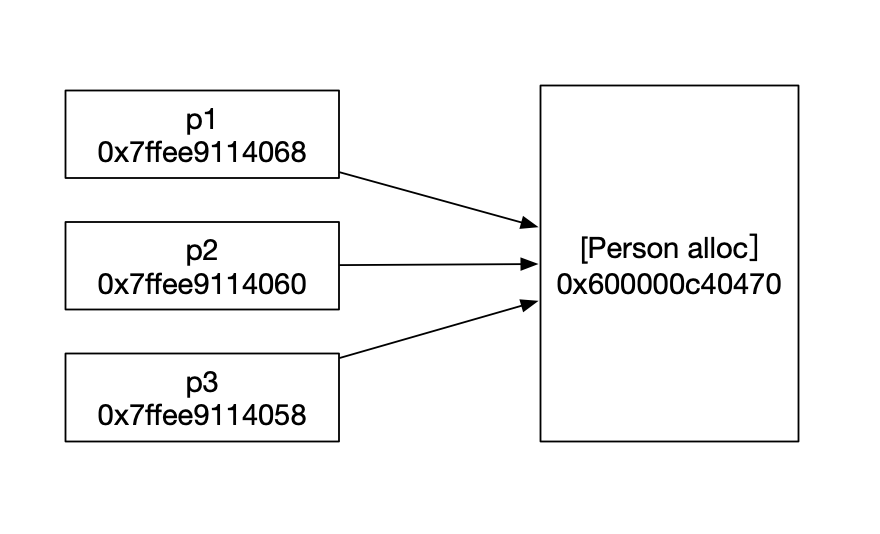
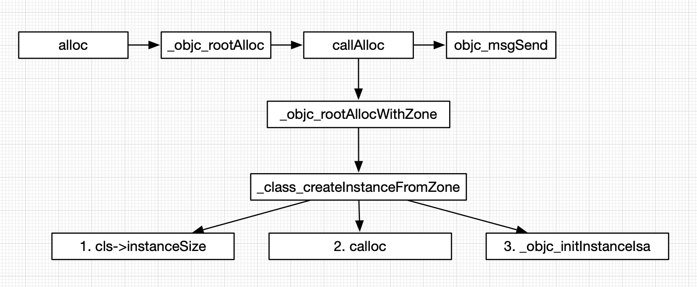
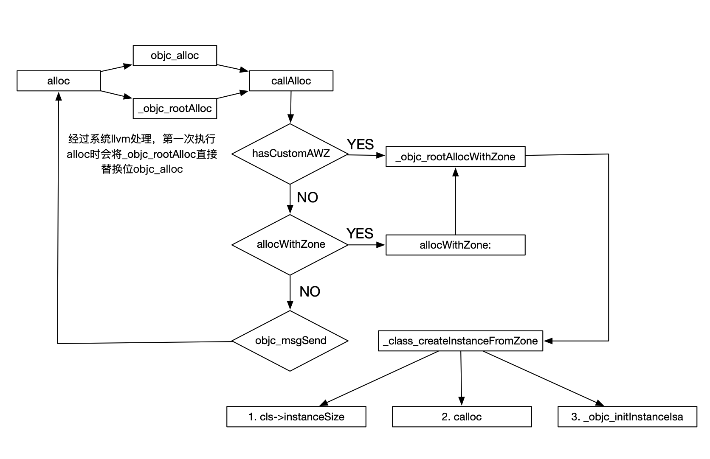

1. 先看一个问题 我们先看一段代码，打印一下输出结果。
1 2 3 4 5 6 Person *p1 = [Person alloc]; Person *p2 = [p1 init]; Person *p3 = [p1 init]; NSLog(@"%@ - %p - %p",p1,p1,&p1); NSLog(@"%@ - %p - %p",p2,p2,&p2); NSLog(@"%@ - %p - %p",p3,p3,&p3);
看输出结果
1 2 3 <Person: 0x600000c40470> - 0x600000c40470 - 0x7ffee9114068 <Person: 0x600000c40470> - 0x600000c40470 - 0x7ffee9114060 <Person: 0x600000c40470> - 0x600000c40470 - 0x7ffee9114058
前两个打印的都是当前对象的指针地址，而最后一个为啥会不一样？
也就是当前alloc生成一个对象开辟了一块内存空间。p1、p2、p3分别开辟一块地址指向alloc开辟的空间。

2. alloc的执行过程 那我们接下来要看alloc是怎么执行的。需要看objc的源码。objc4源码 是可以直接下载的。我们这里用的是最新的818.2版本的。
通过一系列风骚的操作，我们让源码可以运行起来。通过断点和源码我们分析一下alloc的执行过程。
2.1 _objc_rootAlloc 在main.m中，创建一个对象，打上断点。
1 2 Person *p = [Person alloc]; Person *p1 = [p init];
这里只是alloc的最基本的方法。没有什么代码量
1 2 3 4 5 6 7 8 + (id)alloc { return _objc_rootAlloc(self); } id _objc_rootAlloc(Class cls) { return callAlloc(cls, false/*checkNil*/, true/*allocWithZone*/); }
2.2 callAlloc 这里是核心代码。
1 2 3 4 5 6 7 8 9 10 11 12 13 14 15 16 static ALWAYS_INLINE id callAlloc(Class cls, bool checkNil, bool allocWithZone=false) { #if __OBJC2__ if (slowpath(checkNil && !cls)) return nil; if (fastpath(!cls->ISA()->hasCustomAWZ())) { return _objc_rootAllocWithZone(cls, nil); // 1. } #endif // No shortcuts available. if (allocWithZone) { // 2. return ((id(*)(id, SEL, struct _NSZone *))objc_msgSend)(cls, @selector(allocWithZone:), nil); } return ((id(*)(id, SEL))objc_msgSend)(cls, @selector(alloc)); // 3. }
该处内容是现阶段alloc执行的代码
该处已经不执行了，allocWithZone已经在iOS8以后使用的范围教小。
通过消息发送，执行alloc
2.3 _objc_rootAllocWithZone 1 2 3 4 5 6 7 id _objc_rootAllocWithZone(Class cls, malloc_zone_t *zone __unused) { // allocWithZone under __OBJC2__ ignores the zone parameter return _class_createInstanceFromZone(cls, 0, nil, OBJECT_CONSTRUCT_CALL_BADALLOC); }
2.4 _class_createInstanceFromZone 这里是重中之重。alloc的流程都在这里完美的展示出来。
1 2 3 4 5 6 7 8 9 10 11 12 13 14 15 16 17 18 19 20 21 22 23 24 25 26 27 28 29 30 31 32 33 34 35 36 37 38 39 40 41 42 43 44 45 46 47 48 static ALWAYS_INLINE id _class_createInstanceFromZone(Class cls, size_t extraBytes, void *zone, int construct_flags = OBJECT_CONSTRUCT_NONE, bool cxxConstruct = true, size_t *outAllocatedSize = nil) { ASSERT(cls->isRealized()); // Read class's info bits all at once for performance bool hasCxxCtor = cxxConstruct && cls->hasCxxCtor(); bool hasCxxDtor = cls->hasCxxDtor(); bool fast = cls->canAllocNonpointer(); size_t size; // 1. 既然要生成一个对象，首先要做的就是开辟空间，但是要开辟多少？就是这里说了算。 size = cls->instanceSize(extraBytes); if (outAllocatedSize) *outAllocatedSize = size; id obj; if (zone) { obj = (id)malloc_zone_calloc((malloc_zone_t *)zone, 1, size); } else { // 2. 算出来需要多少空间，这里进行开辟 obj = (id)calloc(1, size); } if (slowpath(!obj)) { if (construct_flags & OBJECT_CONSTRUCT_CALL_BADALLOC) { return _objc_callBadAllocHandler(cls); } return nil; } if (!zone && fast) { // 3. 空间有了，这里进行对象关联 obj->initInstanceIsa(cls, hasCxxDtor); } else { // Use raw pointer isa on the assumption that they might be // doing something weird with the zone or RR. obj->initIsa(cls); } if (fastpath(!hasCxxCtor)) { return obj; } construct_flags |= OBJECT_CONSTRUCT_FREE_ONFAILURE; return object_cxxConstructFromClass(obj, cls, construct_flags); }
2.4.1 cls->instanceSize 1 2 3 4 5 6 7 8 9 10 inline size_t instanceSize(size_t extraBytes) const { if (fastpath(cache.hasFastInstanceSize(extraBytes))) { return cache.fastInstanceSize(extraBytes); } size_t size = alignedInstanceSize() + extraBytes; // CF requires all objects be at least 16 bytes. if (size < 16) size = 16; return size; }
这里需要注意的是在ARM64下，内存开辟都是16个字节进行对齐的。所以计算的大小的都是16的倍数。
2.4.2 calloc calloc申请开辟内存，返回地址指针。
2.4.3 obj->initInstanceIsa 生成的对象与class进行关联。通过isa指针。（isa之后会有说明，每一个类都有一个isa指针）。
2.4.4 总结 
这个图很好的说明了alloc的流程。
3. init 1 2 3 4 5 6 7 8 9 10 11 - (id)init { return _objc_rootInit(self); } id _objc_rootInit(id obj) { // In practice, it will be hard to rely on this function. // Many classes do not properly chain -init calls. return obj; }
init其实是工厂方法，从上面的代码可以看到，只是return self。这里有一个重要的点，就是大部分的实现都会交给子类去重新，自定义init方法。
4. new 1 2 3 + (id)new { return [callAlloc(self, false/*checkNil*/) init]; }
我们看到new的实现就是执行了，callAlloc()，然后执行了init操作。与实际上的[[Person alloc] init]并没有什么区别。
但是看到有一些博客上说，还是有区别，因为init被重写之后，调用new可能会造成少些东西。这里不能苟同哈，所有的方法调用，在OC中都是objc_msgSend，会去寻找方法列表的。所以不会存在什么不同。
5. 扩展知识 我们已经知道了，本身写一个Person类，需要开辟16个字节的空间，那需要申请多大内存空间是由什么因素决定的？
我这里添加了两个NSString属性，分别赋值A和B。
1 2 3 4 5 6 7 8 9 10 11 12 13 14 15 (lldb) po p <Person: 0x600002f86cc0> (lldb) x p 0x600002f86cc0: 60 76 e3 06 01 00 00 00 40 20 e3 06 01 00 00 00 `v......@ ...... 0x600002f86cd0: 60 20 e3 06 01 00 00 00 00 00 00 00 00 00 00 00 ` .............. (lldb) x/4gx p 0x600002f86cc0: 0x0000000106e37660 0x0000000106e32040 0x600002f86cd0: 0x0000000106e32060 0x0000000000000000 (lldb) po 0x0000000106e37660 // isa指针，指向class Person (lldb) po 0x0000000106e32040 A (lldb) po 0x0000000106e32060 B
通过x p命令我们可以打印出p的内存地址。从0x600002f86cc0 --- 0x600002f86cd0公占用0x20个自己的空间，也就是32个字节。
6. 真正的alloc流程 当我们执行[Person alloc]的时候，系统内部会通过llvm的函数方法把alloc 指向到objc_alloc。
1 2 3 4 5 6 // Calls [cls alloc]. id objc_alloc(Class cls) { return callAlloc(cls, true/*checkNil*/, false/*allocWithZone*/); }
这里先执行一次callAlloc(cls, true, false)，注意这里的参数。然后执行到calAlloc中。
1 2 3 4 5 6 7 8 9 10 11 12 13 14 15 16 static ALWAYS_INLINE id callAlloc(Class cls, bool checkNil, bool allocWithZone=false) { #if __OBJC2__ if (slowpath(checkNil && !cls)) return nil; if (fastpath(!cls->ISA()->hasCustomAWZ())) { return _objc_rootAllocWithZone(cls, nil); //1. } #endif // No shortcuts available. if (allocWithZone) { return ((id(*)(id, SEL, struct _NSZone *))objc_msgSend)(cls, @selector(allocWithZone:), nil); // 2. } return ((id(*)(id, SEL))objc_msgSend)(cls, @selector(alloc)); // 3. }
通过运行，我们发现会先执行第3个return。所执行的还是alloc，这时候执行的才是真正的alloc。然后就可以顺着第2节的内容继续了。
如图，是完整的alloc会执行两次的流程图：

总结：
alloc的流程
alloc的两次执行过程
init
new
有什么不对的欢迎指正。